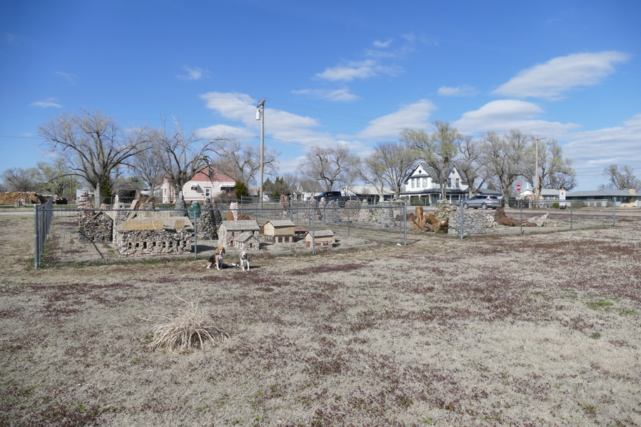

A collection of several dozen sculptures, some models of buildings and some abstract shapes, some in plain rock and some in semiprecious stone. They were originally erected elsewhere in Lucas, moved to Hays, KS and then moved here. How could this town have been struck so hard twice by folk-art lightning?
Halley Beagle Kansas Lucas Wallace Beagle